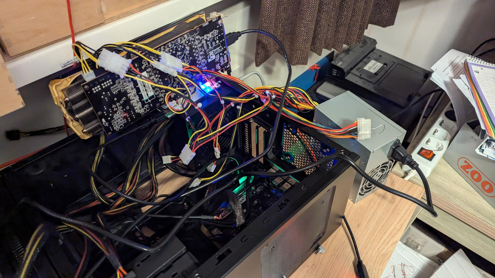

2024-10-19 - Bas Magré
I used the VisionFive2 image of OpenSUSE Tumbleweed.
i have had multiple video cards directly in the jupiter.
I have tried everything
I really have no idea why this has to be so complicated, I bought another 1x to 16x PCIe converter, it will arrive this week. It is possible that it does not want to work on 2x (mainboard) or with a 4x to 16x PCIe converter. Other video cards did work with the 4x to 16x PCIe converter in between. We will see. I hope that the 1x to 16x will work because the Riser board also indirectly goes from 1x to 16x.
hence the somewhat strange setup: 
I forked the milk-v kernel, updated it with the Bianbu Linux - SpacemiT kernel. I was patching myself, but eventually came across this pull-request.
I have put all this in my github.
# we need some firmwares in the kernel
git clone --depth 1 git://git.kernel.org/pub/scm/linux/kernel/git/firmware/linux-firmware.git linux-firmware
# we need the kernel
git clone --branch bl-v1.0.y-amdgpu https://github.com/Opvolger/spacemit-k1-linux-6.1.git
cd spacemit-k1-linux-6.1
# create a .config for compiling the kernel without the onboard GPU and with the AMDGPU enabled.
make ARCH=riscv CROSS_COMPILE=riscv64-linux-gnu- k1_extern_gpu_defconfig
# i have added my GPU firmwares in the config file, maybe you need to edit the `.config` file.
# find the line with CONFIG_EXTRA_FIRMWARE= and add you firmwares. i have a amdgpu/hawaii so search the kernel source code with the text `amdgpu/hawaii` and you will see all the *.bin files that are needed. or look in dir `linux-firmware/amdgpu/`.
# build the kernel, i have 16 cores, so change it if you have more (or less).
make ARCH=riscv CROSS_COMPILE=riscv64-linux-gnu- -j 16I have coped the root and boot partition of OpenSUSE to my m2 drive. boot is on my m2 partition 5 and root is partition 7.
The kernel will be here: arch/riscv/boot/Image.gz and
dtb file here
arch/riscv/boot/dts/spacemit/m1-x_milkv-jupiter.dtb.
Copy them to the OpenSUSE boot partition. Check the name of the
initramfs, in my case it is initramfs-6.6.36+.img. It’s not
a problem that it’s a different version, we included the firmware in our
kernel anyway.
boot the milk-v with a serial connection. it will stop booting (u-boot is missing the standard files it expects. We have the OpenSUSE partitions which are organized differently than it expects).
51af1d3a-4696-4dfc-b8ca-93c85b140f1e == UUID of the root partition of OpenSUSE on my m2 drive.
boot the kernel from u-boot:
ramdisk_addr_r=0x21000000
fdt_addr_r=0x31000000
load nvme 0:5 ${kernel_addr_r} /Image.gz
load nvme 0:5 ${fdt_addr_r} /m1-x_milkv-jupiter.dtb
load nvme 0:5 ${ramdisk_addr_r} /initramfs-6.6.36+.img
setenv bootargs 'console=ttyS0,115200 root=UUID=51af1d3a-4696-4dfc-b8ca-93c85b140f1e rootfstype=ext4 rootwait rw earlycon clk_ignore_unused loglevel=7 radeon.pcie_gen2=0 swiotlb=131072 stmmaceth=chain_mode:1 selinux=0'
booti $kernel_addr_r $ramdisk_addr_r:$filesize $fdt_addr_rYou can make it shorter, create on your one pc the file:
ramdisk_addr_r=0x21000000
fdt_addr_r=0x31000000
load nvme 0:5 ${kernel_addr_r} /Image.gz
load nvme 0:5 ${fdt_addr_r} /m1-x_milkv-jupiter.dtb
load nvme 0:5 ${ramdisk_addr_r} /initramfs-6.6.36+.img
setenv bootargs 'console=ttyS0,115200 root=UUID=51af1d3a-4696-4dfc-b8ca-93c85b140f1e rootfstype=ext4 rootwait rw earlycon clk_ignore_unused loglevel=7 radeon.pcie_gen2=0 swiotlb=131072 stmmaceth=chain_mode:1 selinux=0'
booti $kernel_addr_r $ramdisk_addr_r:$filesize $fdt_addr_rcreate a boot.source:
$ sudo mkimage -C none -A riscv -T script -d boot.cmd boot.scrcopy the file boot.scr to the OpenSUSE boot partition.
The next time you can boot in u-boot with
load nvme 0:5 ${scriptaddr} boot.scr; source ${scriptaddr}